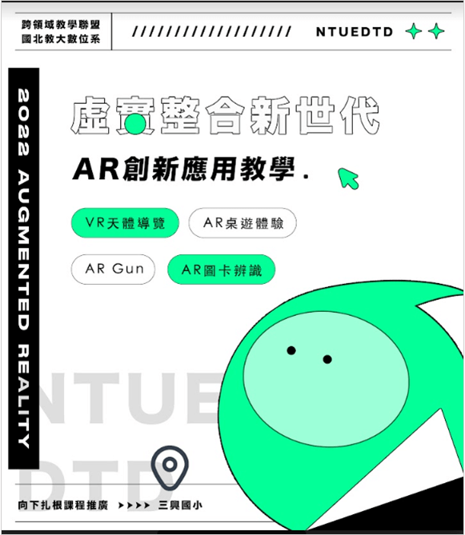

活動名稱：「虛實整合新世代-AR創新應用教學」向下扎根活動
活動日期：111.05.03（二）
合作學校：台北市三興國小
活動內容與目的：國立台北教育大學至台北市三興國小辦理「虛實整合新世代-AR創新應用教學」向下扎根活動，活動當天帶領三興國小約50名學生透過程式邏輯小遊戲，以及實際的AR/VR體驗，加強學生對於虛擬資訊結合現實生活的認識，以提升對於虛擬實境的學習興趣。活動內容包含：VR天體導覽、AR Gun、AR桌遊體驗、AR圖卡辨識等。